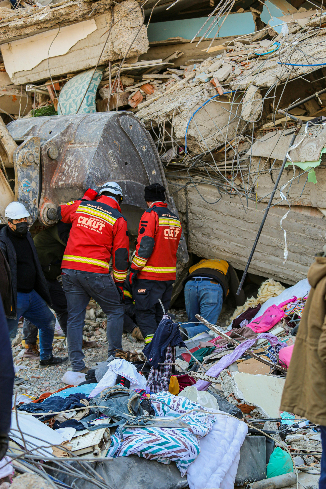

About
Web Developer Elly Beckford is concerned that the environmental agencies of government in Washington, Oregon, California and Canada are misguided in thier estimation of when another Cascadia Storm-Quake will occur in the Pacific Northwest.
This site is created to educate people of the imminent reality of this natural disaster and help them mitigate destruction and loss of life.